Cross-Validation Results: Automatic Report and Interpretation
Metrics by Fold
| Fold |
R2 |
MSE |
RMSE |
MAE |
| 1 |
-0.251405 |
384.513257 |
19.609010 |
16.714286 |
| 2 |
0.250886 |
86.814017 |
9.317404 |
8.018333 |
| 3 |
-17.803012 |
411.577033 |
20.287361 |
17.640000 |
| 4 |
0.197419 |
141.989900 |
11.915951 |
10.066667 |
| 5 |
-0.224169 |
371.909383 |
19.284952 |
16.975000 |
Feature Importance (mean ± std)
| feature |
mean_importance |
std_importance |
| PR |
0.141738 |
0.050425 |
| CL |
0.121359 |
0.030536 |
| OR |
0.111642 |
0.047593 |
| OL |
0.106795 |
0.061580 |
| FL |
0.101293 |
0.056514 |
| TR |
0.099280 |
0.008732 |
| TL |
0.097576 |
0.029899 |
| FR |
0.088603 |
0.045427 |
| CR |
0.066022 |
0.008783 |
| PL |
0.065693 |
0.040769 |
Main Plots
feature_importances_mean_std.png
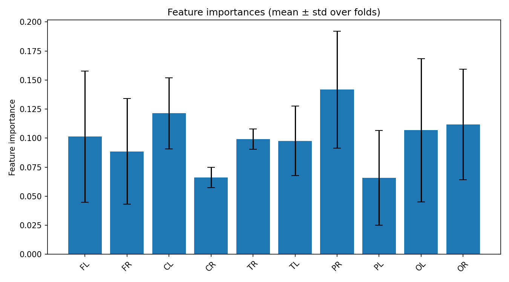
feature_importances_correlation_heatmap.png
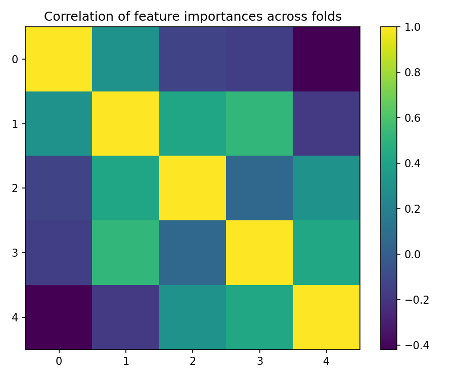
best_fold_2_feature_importances.png
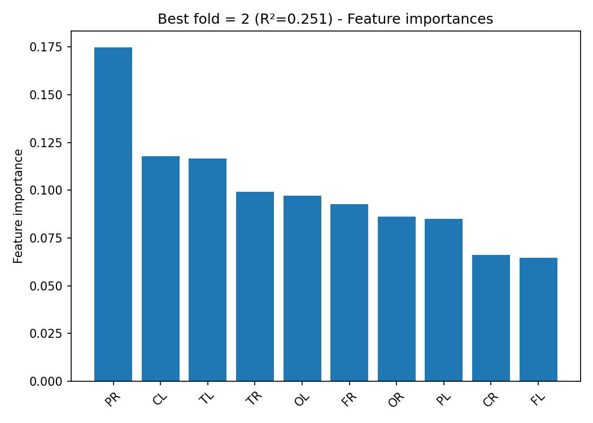
True vs Predicted Scatter Plots (by fold)
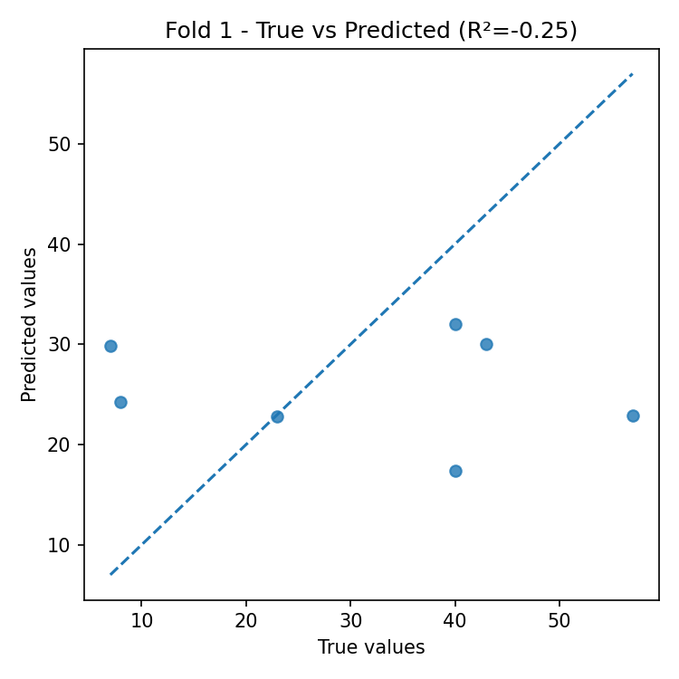
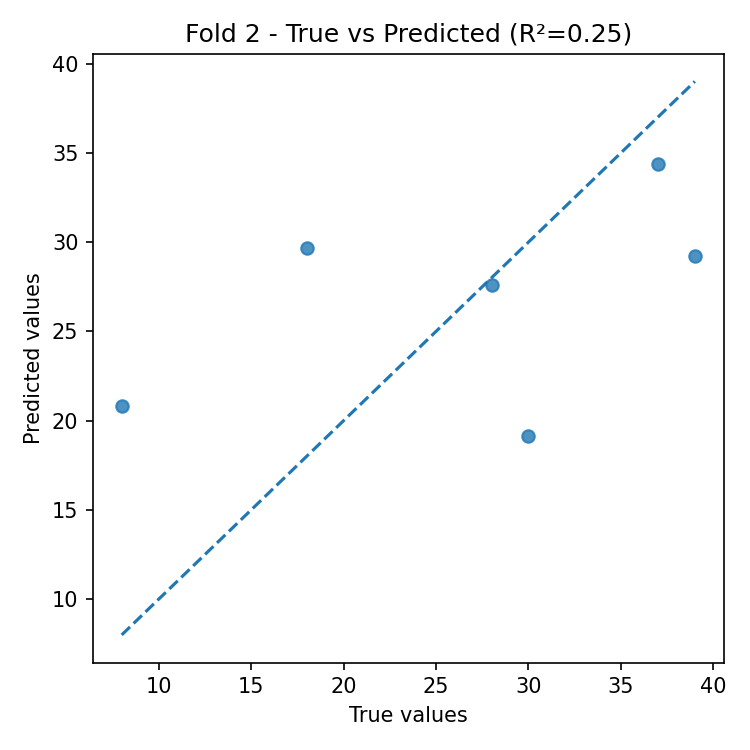
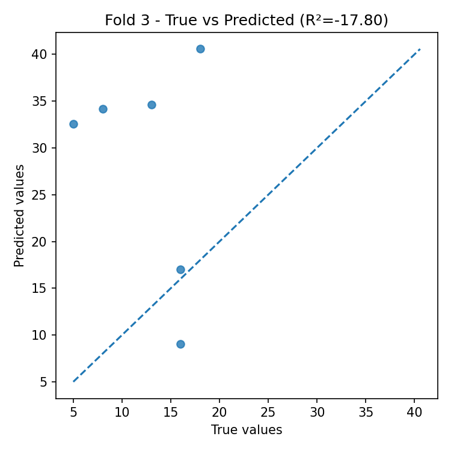
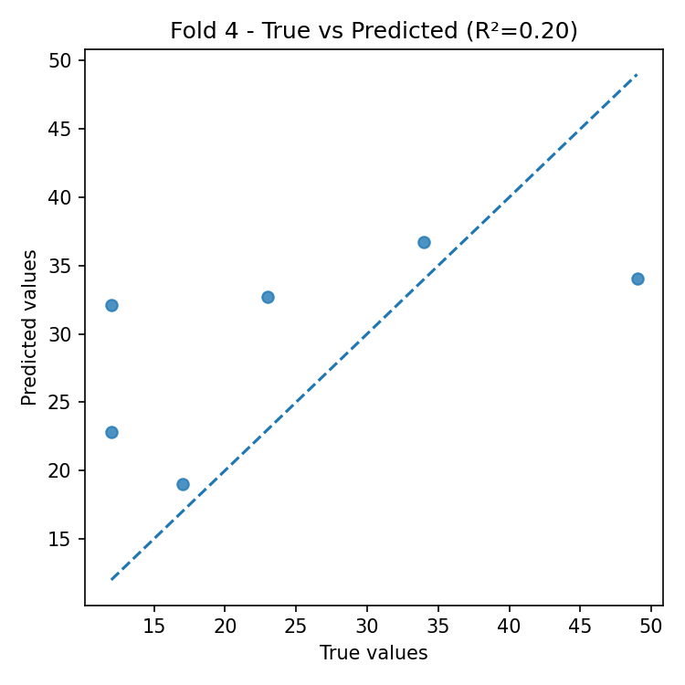
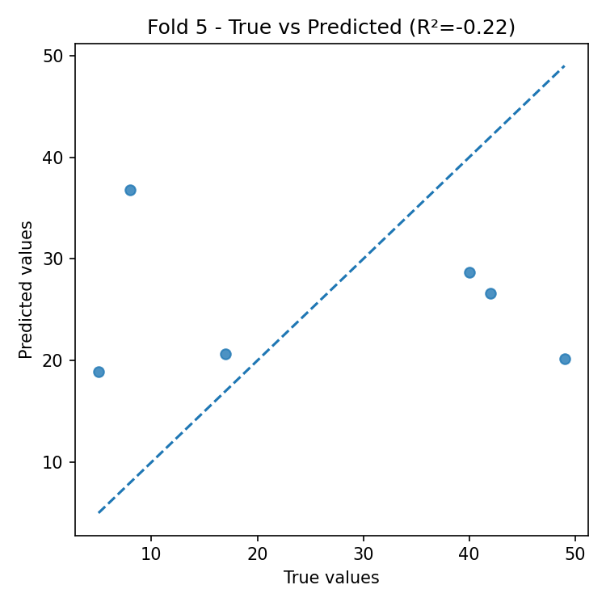
Residual Plots (by fold)
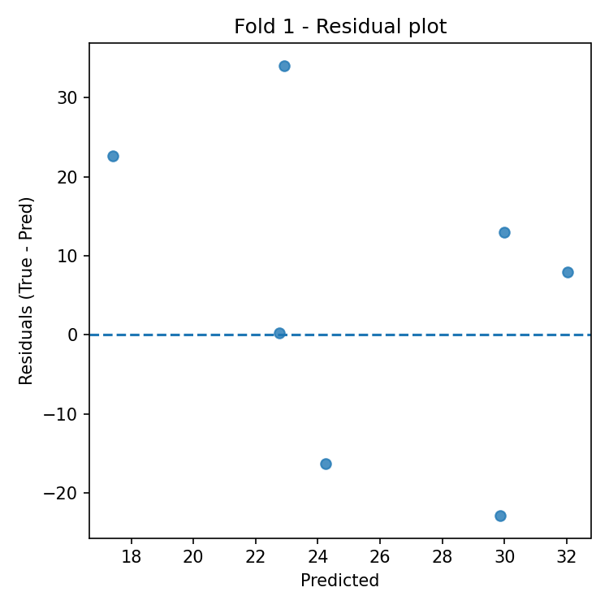
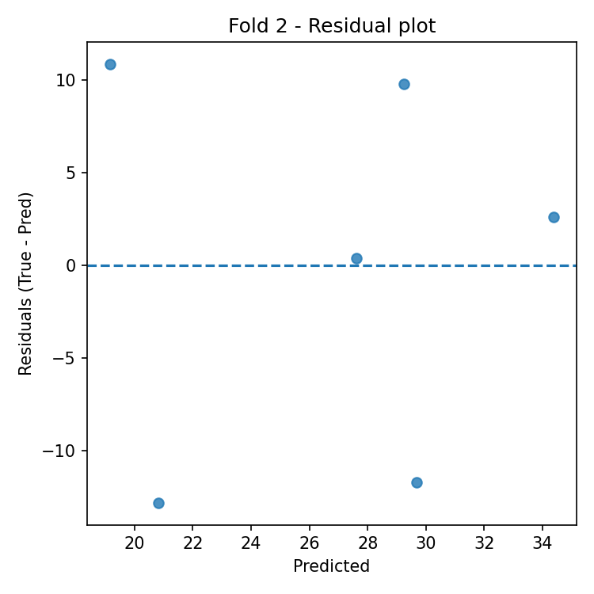
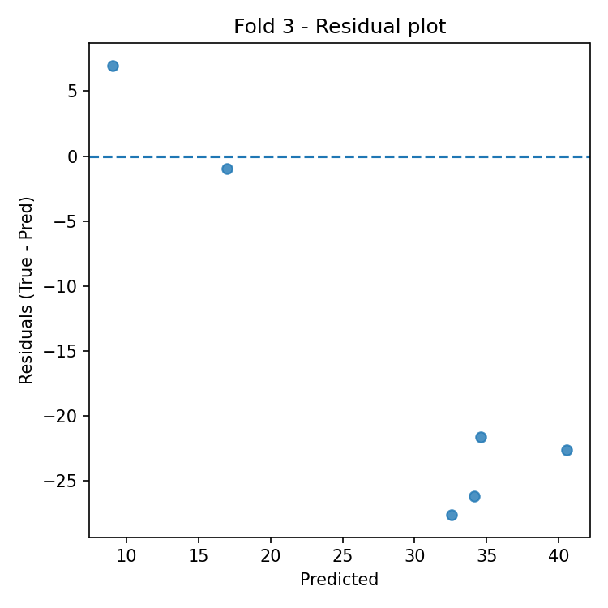
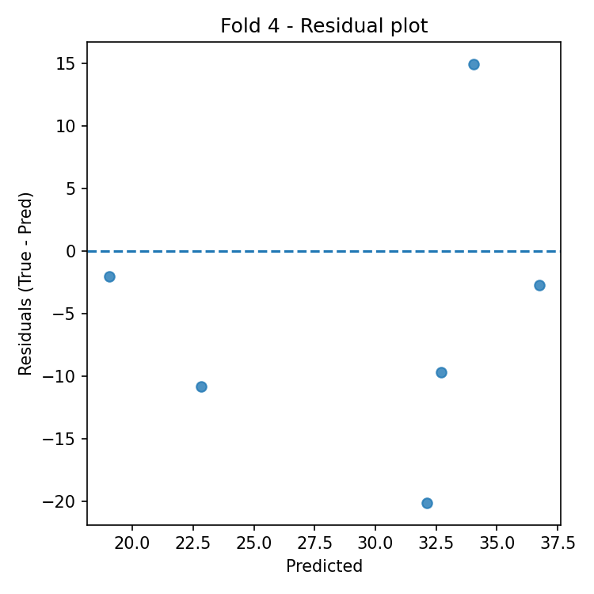
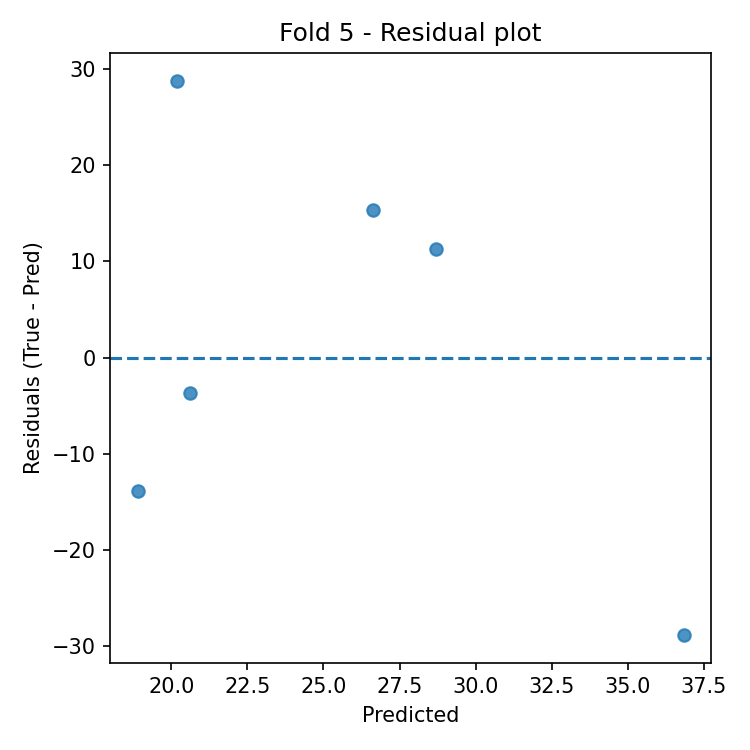
Automatic Interpretation
Overall Performance
- Mean R² across folds: -3.566 (± 7.962).
- Average error: RMSE = 16.083, MAE = 13.883 (same unit as target variable).
Model Stability
- R² variability across folds is high (std = 7.962).
- Average feature importance stability across folds: 0.038 (lower = more stable).
Most Important Features (average across all folds)
- Top-3: PR (0.142), CL (0.121), OR (0.112).
Best Fold
- Best fold: 2 with R² = 0.251.
- In the best fold, the most important features are: PR (0.175), CL (0.118), TL (0.116).
Residual Analysis (best fold)
- Residuals–predictions correlation: 0.013 (0 ≈ absence of linear bias).
- |Residuals|–predictions correlation: -0.551 (positive values indicate possible heteroscedasticity).
- Outliers (|res| > 3·std): 0.